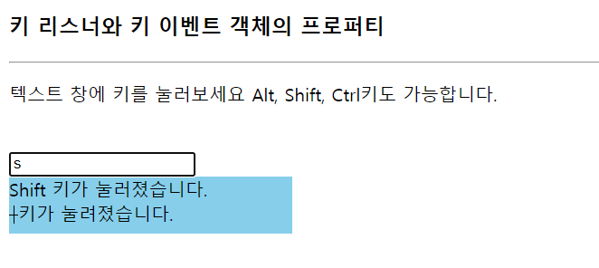
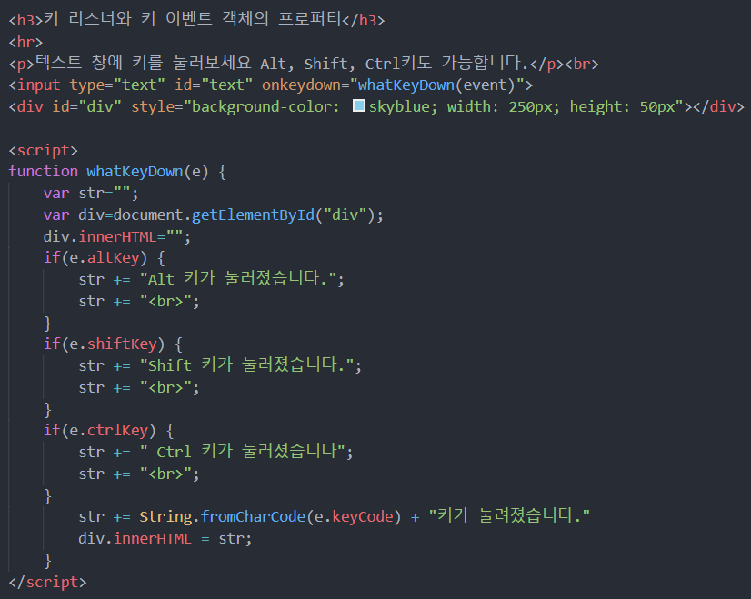

1. 키 이벤트
- onkeydown : 키가 눌러지는 순간 호출. 모든 키에 대해 작동
- onkeyup : 눌러진 키가 떼어지는 순간 호출
- 등등 ...
2. 키보드 이벤트 객체 프로퍼티
- keyCode : 입력된 키의 유니코드 값
- altKey : Alt 키가 눌려진 상태면 true, 아니면 false
- ctrlKey : Ctrl 키가 눌려진 상태면 true, 아니면 false
- shiftKey : Shift 키가 눌려진 상태면 true, 아니면 false
3. 예제 ; 텍스트 창에 입력한 키 출력하기

- 텍스트 창에 누른 키가 어떤 키인지 구분하고 출력
- 그냥 키 이외에도 Alt, Shift, Ctrl 키 또한 구분 후 출력
예시 코드
